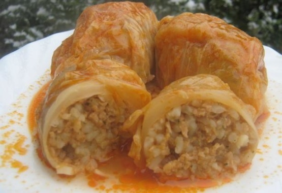

sarma

description
from wikipedia: "Sarma, commonly marketed in the English-speaking world as stuffed grape leaves, stuffed vine leaves, or stuffed cabbage leaves, is a food in Southeastern European and Ottoman cuisine made of vegetable leaves rolled around a filling of grains, minced meat, or both."
ingredients
for the cabbage
- 25 to 30 pickled cabbage leaves OR 1 head cabbage leaves separated
- water
- salt
for the filling
- 3 tablespoons olive oil
- 2 yellow onions
- 4 cloves garlic
- one quarter cup chopped fresh parsley
- 2 fresh tomatoes, finely chopped
- 3 tablespoons tomato paste
- 2 teaspoons sweet paprika
- 2 teaspoons salt, or to taste
- 1 teaspoon ground black pepper
- 1 teaspoon dried oregano
- 1 teaspoon dried thyme
- 1 teaspoon lemon pepper seasoning
- 2 cups long grain rice
- 1 cup halved walnut pieces
for the sauce
- 3 tablespoons olive oil
- 4 cloves garlic, minced
- 1 tablespoon sweet paprika
- 2 cups hot water or vegetable, chicken, or beef broth
directions
- preheat oven to 350 degrees farenheit
- grease a 9 by 13 baking dish
- heat 3 tablespoons olive oil in a large skillet set over medium-high heat
- add the onions to the heated oil and cook for 3 minutes, stirring occassionally
- stir in the garlic and parsley; cook for 30 seconds
- add in the tomatoes; season with paprika, salt, pepper, oregano, thyme, and lemon pepper seasoning, and continue to cook for 4 minutes, stirring frequently until tomatoes are tender
- add the rice and saute for 1 minute
- remove from heat
- using a paring knife, cut off the raised part of the vein on each cabbage leaf, this will make it easier to roll
- lay the leaf flay on your hands on place a heaping spoonful of the filling on one side of the leaf; add a piece of walnut in the middle of the filling. don't add too much filling because it will be too stuffed to roll it up
- roll it up tightly, tucking in the sides of the leaf
- place the stuffed cabbage rolls in previously prepared baking dish, seam sides down
- season tops with salt and black pepper and set aside
- heat 3 tablespoons olive oil in a saucepan
- add garlic to the heated oil and cook for 15 seconds
- mix in the sweet paprika
- stir in the hot water/broth and bring to a boil
- pour the hot liquid over the cabbage rolls
- cover the dish with a lid or aluminum foil
- bake for 45 minutes
- remove the foil and continue to bake for 15 additional minutes
- remove from oven and check to make sure that the rice is cooked through, if not, put it back in the oven for 10 to 12 minutes longer
- serve
recipe taken from here